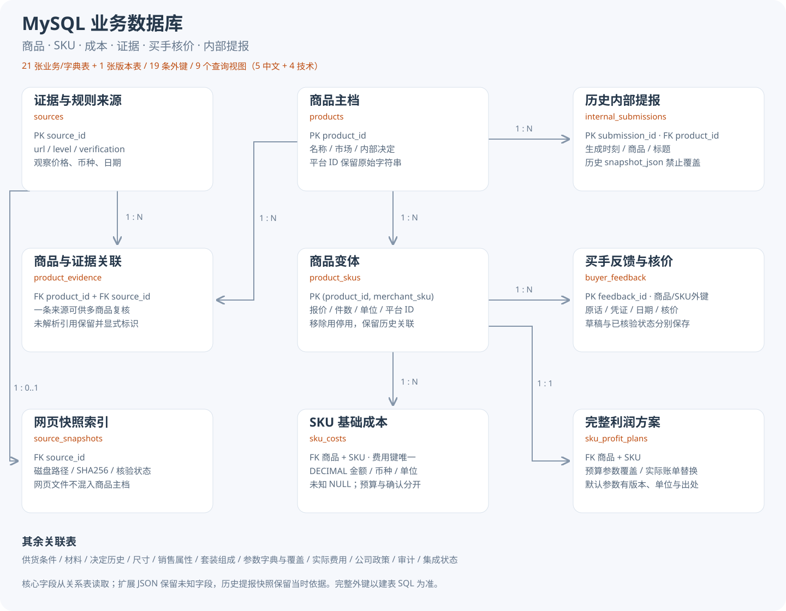

商品与 SKU
商品一对多变体，规格、包装、基础成本和完整利润参数按 SKU 保存。
围绕“商品 → SKU → 成本与证据 → 买手核价 → 内部评审”建模。常查字段直接为列，关系有约束，历史有保留。
商品一对多变体，规格、包装、基础成本和完整利润参数按 SKU 保存。
网址集中存储，商品和来源多对多。核价按 SKU 关联，原话与凭证保留。
修改和商品同事务提交。评审快照按 ID 禁止覆盖，迁移和恢复先对账。
图示为主要业务链，全部表、外键、检查约束和索引以建表 SQL 为准。

sources.url 保存原始网址；product_evidence 关联商品；source_snapshots 索引已有网页文件和哈希。
SELECT product_id, product_title, source_title, url,
verification, snapshot_file, hash_verified
FROM v_product_evidence
WHERE product_id = 'DE-DRAWER-006';Navicat 中刷新 temu_workbench，打开“视图 → v_product_evidence”即可查看，无需手动解析 JSON。
核心字段、金额、日期和关系需要直接查询与约束，已拆成关系表。JSON 只保留未建模数据和兼容格式；完整历史提报适合保留生成当时的 JSON 快照。
MySQL 使用 DECIMAL(30,12)，Python 使用 Decimal。未知金额为 NULL，已知为零才写 0。金额、币种和销售单位一起保存；计算留四位小数，页面显示到分。超出精度直接拒绝。
SKU 停用保留行，反馈仍能关联原 SKU。产品当前列表只返回有效 SKU，审计和历史评审保留当时内容。
主档、SKU、子表和修改历史同事务提交。测试会在写入第二项成本时故意中断，确认整个数据库状态保持原样。
MySQL 建表、改名等 DDL 会隐式提交，因此建结构、事务导入对账和旧表归档分阶段执行。失败保留旧表，验证后才切换应用。不能把 DDL 宣称为可一起回滚。
没有账号权限、多人冲突控制、不可篡改审计和真实订单/库存/结算。快照索引保留每来源最新文件，原文件需单独备份。当前仍是单人业务工作台。
第一版先用通用记录表和 JSON 验证业务。流程稳定后，我按商品、SKU、成本、证据、反馈和提报拆表，让网址、金额和日期可直接查询。
商品与 SKU 一对多，商品与证据多对多，成本和核价关联具体 SKU；用外键、唯一键和事务保证一致性。金额用 DECIMAL，平台 ID 保留字符串，未知值保留 NULL。
迁移前备份，导入后重建原数据做摘要对账，并逐个比较利润结果。旧表保留归档，历史评审快照不会被后续改价覆盖。
2026-11-26 的迁移记录，不是实时经营统计。
| 检查 | 结果 |
|---|---|
| 业务数据 | 12 商品、12 SKU、60 基础成本行；旧业务 DTO 摘要一致 |
| 财务结果 | 全部 12 个候选的贡献与完整利润结果一致 |
| 来源与文件 | 31 条统一来源；5 份已有网页文件，哈希均一致 |
| 历史记录 | 8 条修订、8 份内部提报保留，旧五表归档 |
来源登记不等于正文已核验；采购价、概率和买手反馈仍需真实账单验证。这里展示数据库工程结果。